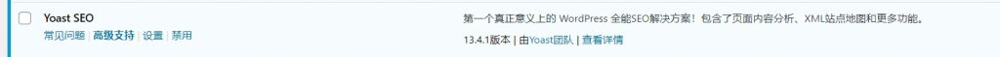
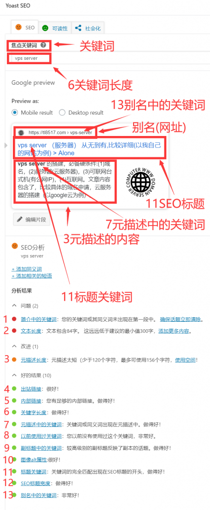
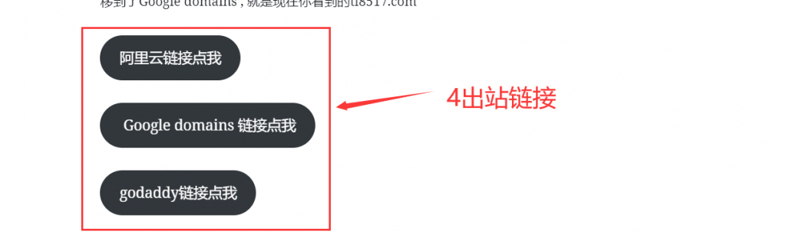
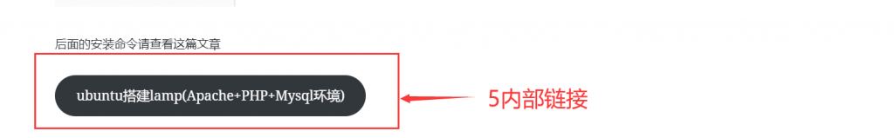
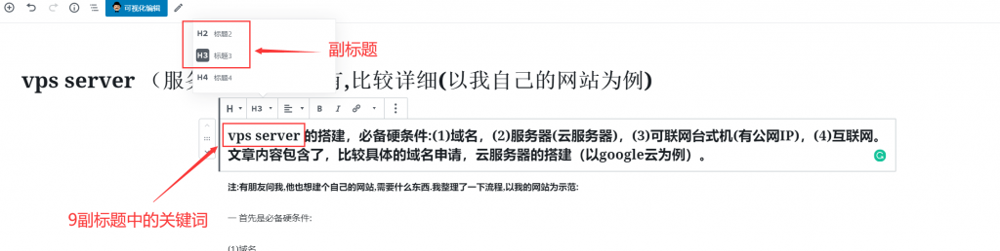
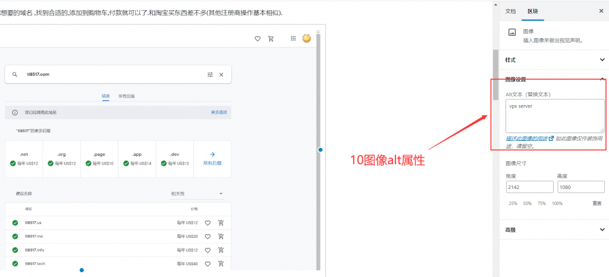

SEO keyphrase （搜索引擎优化）关键词分析（网站建设）
SEO keyphrase （搜索引擎关键词优化）可以提升网站在google，bing，百度等搜索引擎中的排名，提高网站流量。在wordpress中安装了一个Yoast SEO的插件，现在来学习下搜索引擎中的一些关键词，来分析一下它们的作用。

Yoast SEO 第一个真正意义上的 WordPress 全能SEO解决方案！包含了页面内容分析、XML站点地图和更多功能。
我用的时免费版的，功能很少，看介绍很多需要手动调整。
文章编辑页面下方点开Yoast SEO ，会有一个分析结果。你可以点击链接跳转，查看相应的详细内容。
分析结果
问题 (2)
改进 (1)
好的结果 (10)
- 出站链接：很好！
- 内部链接：您有足够的内部链接。做得好！
- 关键字长度：做得好！
- 元描述中的关键词：关键词或同义词出现在元描述中。做得好！
- 以前使用过关键词：您以前没有使用过这个关键词，非常好。
- 副标题中的关键词：较高级别的副标题反映了副本的话题。做得好！
- 图像alt属性:很好！
- 标题关键词：关键词的完全匹配出现在SEO标题的开头，做得好！
- SEO标题宽度：做得好！
- 别名中的关键词：非常好！

1简介中的关键词
这个简介没有找到相应的位置，以后在补全。
2文本长度
这是你的文章内容所包含的字。文章至少包含300个单词，才能在搜索引擎中获得更好的排名。
3元描述长度
元描述是可以添加到您的文章或网页的简短文字。主要有一下两点：
- 用于提高 点击率；
- 用于提高您在Google中的 排名。
4出站链接
出站链接就是从你的网站跳转到其它网站的链接。官网认为互联网依靠链接而存在，我们应该在可能的情况下连接到其他网站。

5内部链接
内部链接是指向自己网站上其他页面的链接。可以提高排名，验证网站所有者，引导访问者等。

6关键字长度
关键字就是使用搜索引擎搜索时的单词。长度，官网建议最多4个单词。
7元描述中的关键词
元描述就是添加到您的文章或网页的简短文字，编辑元描述时，关键词是需要用空格隔开才能识别。
8以前使用过关键词
很好理解，你设置关键词在你以前的文章中有没有被使用。
9副标题中的关键词
在副标题中包含关键短语可以向读者显示文本特定的主题，关键词同样需要使用空格隔开，标题只能使用H2或者H3才能识别。

10图像alt属性
图片alt的关键词用来检测文章中是否有图像，以及图像是否带有关键词的alt文本。通过替代文本，可以提高访问，提高排名机会。多张图片时，alt属性的设置占30％到70％之间。

11标题关键词
页面标题是SEO最重要的部分之一，如果标题没有重点关键词，则很难对帖子进行排名。
12seo标题宽度
就是标题的长度，太短了不行，太长也不行。标题太短没有充分利用空间，过长太啰嗦。
13别名中的关键词
网址中也要包含前面设定的关键词。优质的内容值得一个令人难忘的网址。SEO友好的URL是重点突出的对象。
文章内容参考，yoast seo网站：